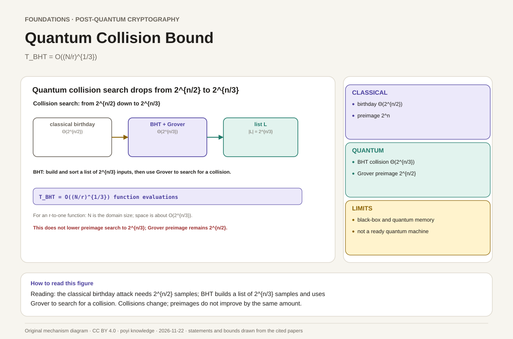
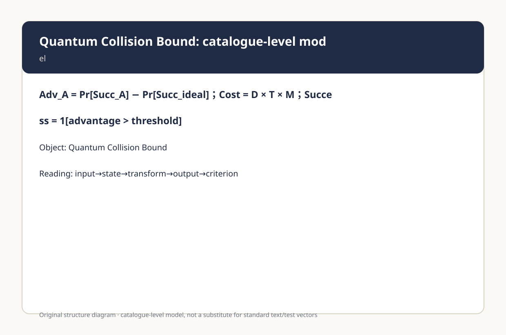

Principles
Attack: Quantum Collision Search (量子碰撞搜索). ### Classical collision search
For an n-bit hash, sampling about 2^{n/2} inputs finds a collision with high probability by the birthday paradox. This is optimal up to constants in the classical black-box model: Ω(2^{n/2}) evaluations. Preimage search needs about 2^n evaluations. ### BHT’s quantum algorithm
Brassard–Høyer–Tapp 1998 gave a quantum collision algorithm: for an r-to-one function f:{0,1}^N→{0,1}^M, it finds a collision in expected O((N/r)^{1/3}) evaluations. For an n-bit hash this is O(2^{n/3}). The algorithm first builds and sorts a list of about 2^{n/3} inputs and their images; it then uses Grover search to find a collision between the list and a fresh input. Quantum search square-roots the remaining search, yielding total cost 2^{n/3}. ### Why not 2^{n/2}
The classical birthday attack stores and compares up to 2^{n/2} samples; BHT reduces the sample count to 2^{n/3} and uses Grover over the remaining space. Grover gives only a square-root speedup for unstructured search, so the classical 2^{n/2} becomes 2^{n/3}, not 2^{n/4}. For preimages, Grover only turns 2^n into 2^{n/2}; collision and preimage are different complexity curves.

Why it matters
If the target is 128-bit security against classical collision attacks, a 256-bit hash suffices (2^{128}). To resist quantum collision attacks, 2^{n/3}=2^{128} needs n≈384. NIST post-quantum signatures such as SPHINCS+ therefore use longer hash outputs or adjusted parameter sets. Treating a 256-bit hash as “still 128-bit collision security under quantum” is a common error.
Grover on AES-256 preimage/key search costs 2^{128}, not 2^{256/3}; BHT targets collisions. The main public-key threat is Shor, not BHT. Parameter evaluation must be done per primitive and per target, not with one “quantum speedup factor”.
BHT needs quantum random-access memory, coherent queries and many logical qubits; current hardware is nowhere near 2^{85} coherent evaluations. It is a lower-bound analysis for parameter selection, not an executable attack schedule.
Applications
- State the target: classical collision, quantum collision, preimage or second preimage. 2. Classical collision: an n-bit output gives n/2 bits of security. 3. Quantum collision: estimate by 2^{n/3}; a target of b bits needs n≥3b. 4. Preimage: classical 2^n; quantum Grover 2^{n/2}. 5. Check whether the protocol relies on properties beyond collision resistance (PRF, commitments, Merkle trees). 6. Include memory, coherence time and error correction in practical feasibility; do not look only at the asymptotic exponent.
- Hash-based signatures such as SPHINCS+/XMSS: choose hash output and tree height against both classical and quantum collisions. - Post-quantum security categories: interpret NIST category 1/3/5 parameters. - Blockchains and code signing: long-lived data needs a “store-now, decrypt-later” quantum assessment.

Limits & attacks
- Black-box model. BHT assumes a black-box function; algorithms that exploit the hash internals may do better. 2. Quantum memory model. The algorithm needs quantum RAM or substantial coherent storage; different cost models change constants and feasibility. 3. Collisions only. It does not lower preimage search to 2^{n/3}; Grover preimage remains 2^{n/2}. 4. Asymptotic notation hides constants. The constant in 2^{n/3}, parallelization and memory access all affect real cost. 5. Current hardware. Logical qubits, error correction and coherence time are practical bottlenecks; an exponent is not a near-term timeline. 6. Not every hash use rests on collisions alone. MACs, PRFs, commitments and zero knowledge may rely on different properties and need separate analysis.
History
Grover gave the square-root speedup for unstructured search in 1996; Brassard, Høyer and Tapp applied it to collision and claw search in 1997/1998, obtaining O((N/r)^{1/3}). The paper became the standard citation for post-quantum hash-security assessment.
NIST launched its post-quantum cryptography process in 2016 and published NISTIR 8105 in 2017 on the quantum impact. Hash-based signatures and symmetric primitives began reporting classical and quantum collision bounds together; BHT moved from a theoretical algorithm into the language of standard parameters.
Worked example & verification
Formal model and reproduction steps
[P\approx 1-\exp!\left(-\frac{q(q-1)}{2,2^n}\right)]
Quantum Collision Search: the registered public parameters, key material or randomness, and message are mapped through the stated transformation to an output checked against the registered criterion. The worked example is a structural reproduction, not a new test vector; parameter ranges, standard versions and implementation details remain source-bound.
References
- Wikipedia search entry for 量子碰撞搜索. https://zh.wikipedia.org/w/index.php?search=%E9%87%8F%E5%AD%90%E7%A2%B0%E6%92%9E%E6%90%9C%E7%B4%A2
- Handbook of Applied Cryptography (Menezes, van Oorschot, Vanstone). https://www.cacr.math.uwaterloo.ca/hac/